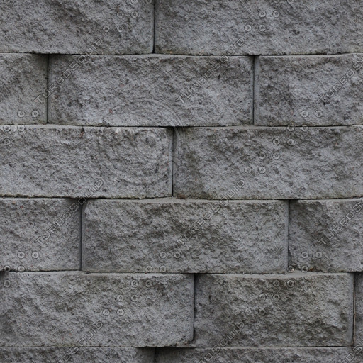

Tugas Proyek bunGLon
Contributors:
1706124176 - Tjandra Satria Gunawan
1606917696 - Kevin Prakasa
1606878871 - Justin

Camera option
Up
Left
Right
Down
Toogle Movement (0)
Toggle Wireframe (1)
Demo Mode
Toggle Mode (m)